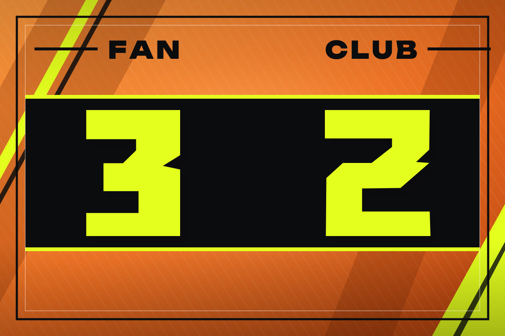
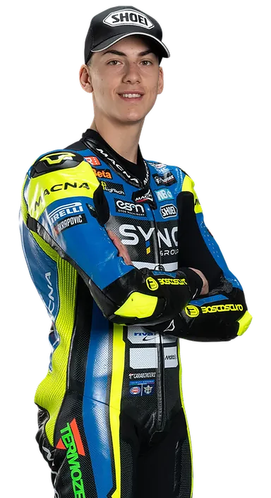

Tessera del Fan Club
Fan
Club
Luca Lunetta
Moto2 · BETA Tools SpeedRS Team
Socio
Stagione 2026


Fan Club
Luca Lunetta #32
Pilota
Luca Lunetta, Moto2
Numero
32
Team
BETA Tools SpeedRS Team
Nato a
Roma, 27 maggio 2006
Instagram
@lucalunetta58
Firma del socio
Forza
Luca!